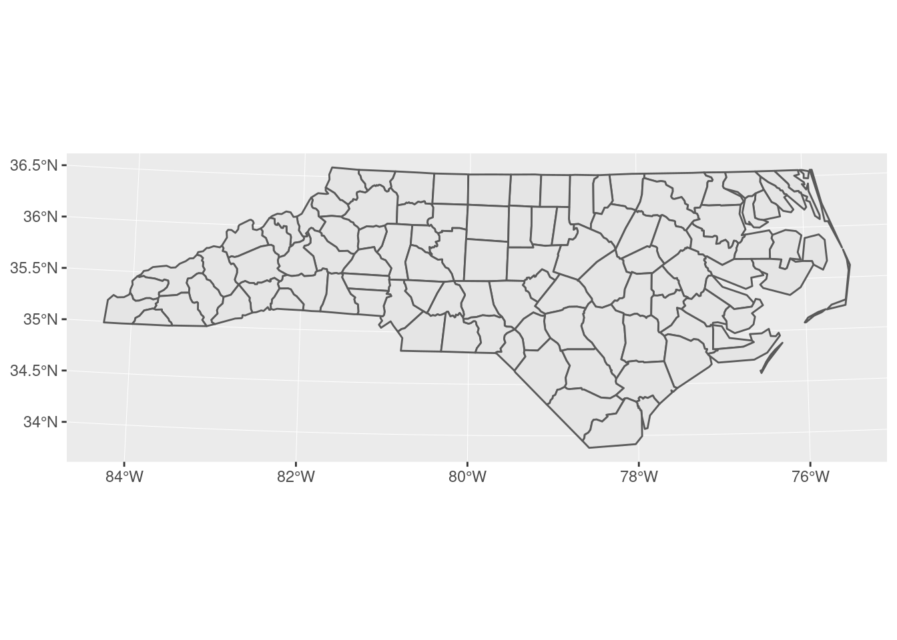
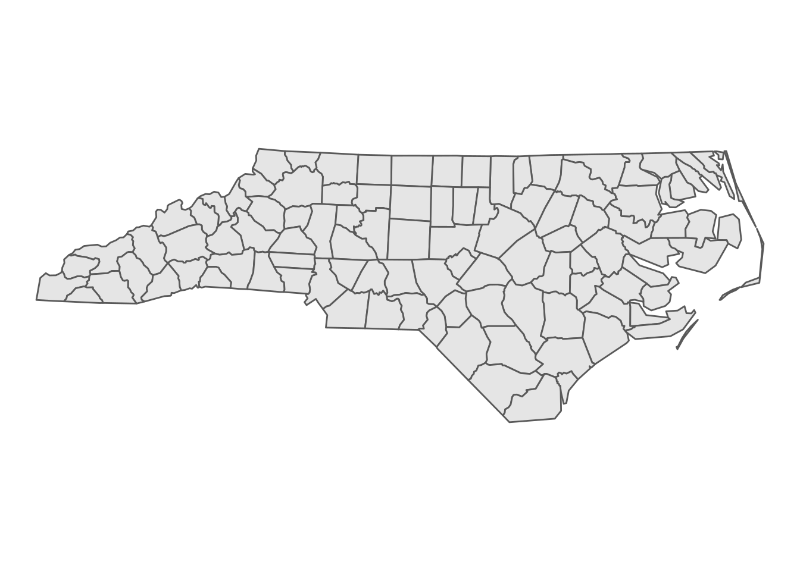
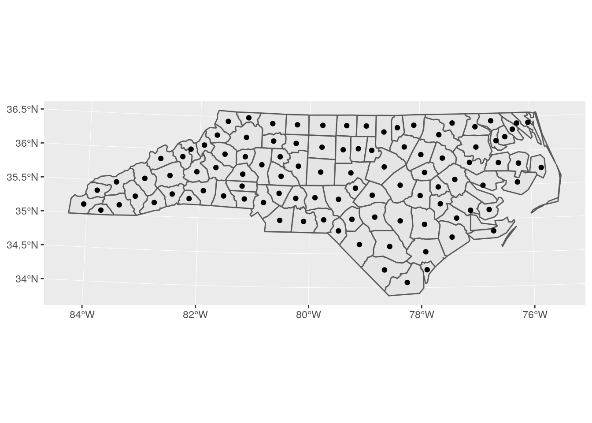
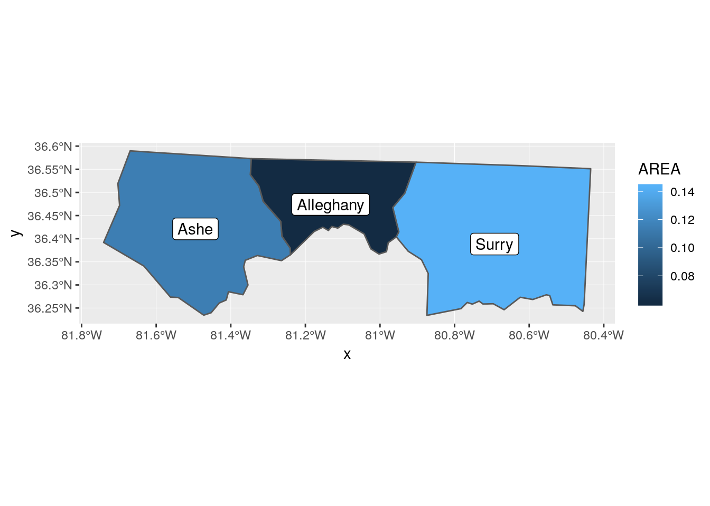
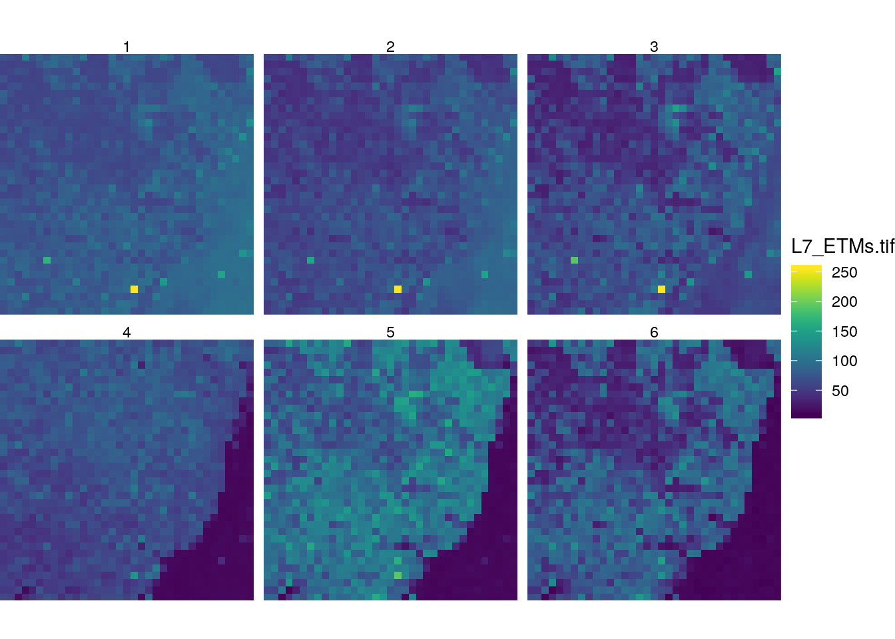
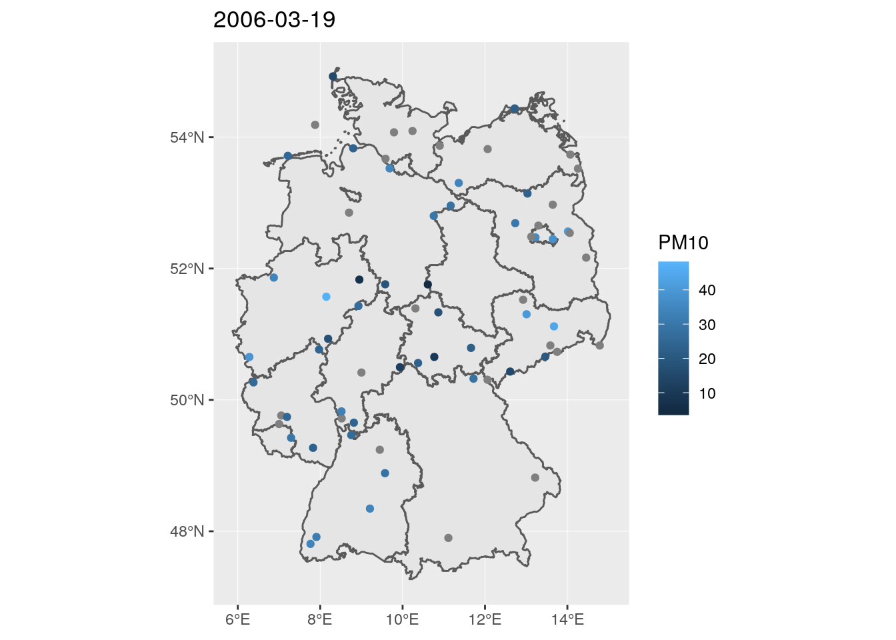

Chapter 10 ggplot2
Function ggplot from package ggplot2 (Wickham 2016)
provides a high-level interface to creating graphs, essentially
by composing all their ingredients and constraints in a
single expression. It implements the “grammar for graphics” by
Wilkinson (2006), and is the plotting package of choice in the
tidyverse.
Before ggplot 3.0.0 came out, the approach to plotting spatial
data was to fortify it, meaning encode all the geometries as atomic
vectors in a data.frame, keeping an ID column to register which
coordinate belonged to which geometry, and repeating all non-geometry
attributes for each geometry coordinate. This worked reasonably
well for points and lines, but not very well for polygons with holes.
Since ggplot 3.0.0 and package sf, this runs much smoother;
ggplot has received a geom_sf function that could take an sf
object and calls st_as_grob on each feature geometry to get an
object that can directly be added to the plot. In addition to that,
it takes care of automated datum transformations or projections
if different objects have differing coordinate reference systems,
and adds by default a graticule and degree axis tic labels.
Moreno and Basille (n.d.), Moreno and Basille (n.d.) and Moreno and Basille (n.d.) published three guest blogs on
r-spatial.org explaining the capabilities of ggplot for making
beautiful maps with sf and ggplot2.
10.1 geom_sf
We will introduce the affordances of geom_sf here step by step.
We use a projected version of nc
library(tidyverse)
library(sf)
system.file("gpkg/nc.gpkg", package="sf") %>% read_sf() %>%
st_transform(32119) -> nc.32119and create a first ggplot by
ggplot() + geom_sf(data = nc.32119)  It is attractive to think that
ggplot(nc.32119) + geom_sf()would also work, but it doesn’t – it only works if the geometry
column is named geometry, which is not always the case (sf
objects may have more than one geometry column).
If we want to get rid of the axis tics and grid lines, we could use
ggplot() + geom_sf(data = nc.32119) + theme_void() +
theme(panel.grid.major = element_line(color = "white"))
A first ggplot2 plot with polygons colored by attributes (as in figure 1.2) is created by
ggplot() + geom_sf(data = nc.32119) + aes(fill = BIR74) +
scale_fill_gradientn(colors = viridis::viridis(20))
10.1.1 facet plots
Facet plots are a powerful means to compare maps, because they
keep all the plotting parameters constant (spatial extent, scale,
color breaks). One would perhaps wish that it were possible to
directly plot multiple attribute columns over facet maps. For this,
we first have to reorganise the data such that the target variable is
a single column, another column indicates the facet, and geometries
are repeated accordingly. For this, tidyr::gather can be used; an
example is given in figure 1.3.
10.1.2 multiple geometries in a single map
Multiple geometries with geom_sf can be created by adding consecutive
geom_sf geometries; we can add for instance the county centroids to
a plot by
ggplot() + geom_sf(data = nc.32119) + geom_sf(data = st_centroid(nc.32119))
#> Warning in st_centroid.sf(nc.32119): st_centroid assumes attributes are
#> constant over geometries of x
When subsequent sf objects have a different coordinate reference
system from the first object, geom_sf will transform them to the
reference system of the first object.
10.1.3 Fine tuning
In case sf objects have multiple geometry list-columns, the
“active” list column is selected by default. This can be overriden
by supplying another column name in aes(geometry = my_column) `
To add labels to geometries, one can use geom_sf_label. From the examples of geom_sf:
nc <- sf::st_read(system.file("gpkg/nc.gpkg", package = "sf"), quiet = TRUE)
nc_3857 <- sf::st_transform(nc, "+init=epsg:3857")
ggplot() +
geom_sf(data = nc_3857[1:3, ], aes(fill = AREA)) +
geom_sf_label(data = nc_3857[1:3, ], aes(label = NAME))
geom_sf_text can be used to add simple text annotations without decoration.
Graticules are drawn by default. Since they are different for
every projection, it is hard to anticipate how strongly they will
be curved. geom_sf takes a parameter ndiscr, by default set to
100, which can be increased when graticulas show up unexpectedly
as non-smooth lines.
label_graticules can be used to control which graticules are
labeled. In addition, label_axes controls on which axes particular
graticules will be labeled.
10.2 geom_stars
Package stars comes with a geom_stars function that is much
more limited in scope than geom_sf. In essence, it creates a call
to
geom_rasterin case of raster data with a regular grid,- to
geom_tilefor other raster data, or - to
geom_sfif thestarsobject has a simple feature geometry dimension rather than raster dimensions, or has a curvilinear raster
geom_raster also creates the mapping of dimension names to x
and y-coordinates and set the first attribute name as the fill
variable. This means that the aspect ratio still needs to be
controlled (coord_equal()) and that a facet_wrap is needed
to display multiple rasters. An example is shown in figure
10.1.
library(stars)
library(ggplot2)
library(viridis)
#> Loading required package: viridisLite
system.file("tif/L7_ETMs.tif", package = "stars") %>% read_stars() -> x
ggplot() + geom_stars(data = x) +
coord_equal() +
facet_wrap(~band) +
scale_fill_viridis() +
theme_void() +
scale_x_discrete(expand=c(0,0)) +
scale_y_discrete(expand=c(0,0))
Figure 10.1: example of geom_stars
geom_stars has a parameter, downsample, which can be used to downsample
particular dimensions. Here we downsample a 90m x 90m raster to a 900m x 900m
raster:
ggplot() + geom_stars(data = x, downsample = c(10,10,1)) +
coord_equal() +
facet_wrap(~band) +
scale_fill_viridis() +
theme_void() +
scale_x_discrete(expand=c(0,0))+
scale_y_discrete(expand=c(0,0))
library(spacetime)
data(air) # this loads several datasets in .GlobalEnv
d = st_dimensions(station = st_as_sfc(stations), time = dates)
aq = st_as_stars(list(PM10 = air), dimensions = d)
# ggplot() + geom_stars(data = aq[,,3000])
aq.sf = st_as_sf(aq[,,3000], long=TRUE)
ggplot() +
geom_sf(data = st_as_sf(DE_NUTS1)) +
geom_sf(data = aq.sf, mapping = aes(col = PM10)) +
ggtitle(aq.sf$time[1])
References
Wickham, Hadley. 2016. Ggplot2: Elegant Graphics for Data Analysis. Springer.
Wilkinson, Leland. 2006. The Grammar of Graphics. Springer Science & Business Media.
Moreno, Mel, and Mathieu Basille. n.d. Drawing Beautiful Maps Programmatically with R, Sf and Ggplot2 - Part 1: Basics. r-spatial.org. https://www.r-spatial.org/r/2018/10/25/ggplot2-sf.html.
Moreno, Mel, and Mathieu Basille. n.d. Drawing Beautiful Maps Programmatically with R, Sf and Ggplot2 — Part 2: Layers. r-spatial.org. https://www.r-spatial.org/r/2018/10/25/ggplot2-sf-2.html.
Moreno, Mel, and Mathieu Basille. n.d. Drawing Beautiful Maps Programmatically with R, Sf and Ggplot2 — Part 3: Layouts. https://www.r-spatial.org. https://www.r-spatial.org/r/2018/10/25/ggplot2-sf-3.html.